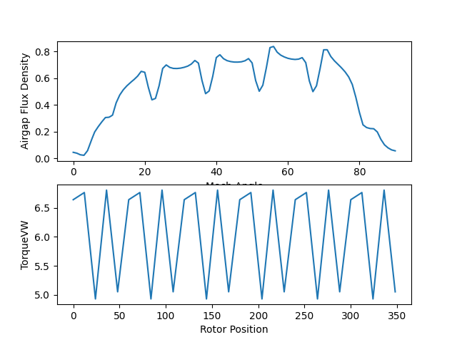
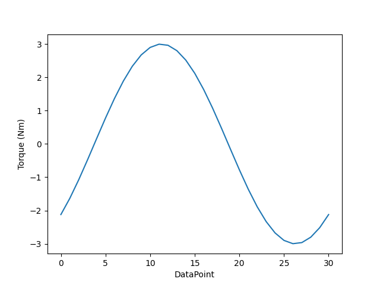

Note
Go to the end to download the full example code.
Motor-CAD E-magnetic example script#
This example provides a Motor-CAD E-magnetic script. This script creates a partial custom winding pattern to change parameter values, run the analysis, and plot results. To create a full winding pattern, parameters must be specified for all coils.
Set up example#
Setting up this example consists of performing imports, specifying the working directory, launching Motor-CAD, and disabling all popup messages from Motor-CAD.
Perform required imports#
import os
import matplotlib.pyplot as plt
import ansys.motorcad.core as pymotorcad
if "QT_API" in os.environ:
os.environ["QT_API"] = "pyqt"
Specify working directory#
working_folder = os.getcwd()
if os.path.isdir(working_folder) is False:
print("Working folder does not exist. Choose a folder that exists and try again.")
print(working_folder)
exit()
Launch Motor-CAD#
print("Starting initialization.")
mcad = pymotorcad.MotorCAD()
Starting initialization.
Disable popup messages#
mcad.set_variable("MessageDisplayState", 2)
print("Initialization completed.")
print("Running simulation.")
Initialization completed.
Running simulation.
Create analysis#
Creating the analysis consists of showing the magnetic context, displaying the Scripting tab, setting the geometry and parameters, and saving the file.
Show the magnetic context.
mcad.show_magnetic_context()
Display the Scripting tab.
mcad.display_screen("Scripting")
Set the geometry.
mcad.set_variable("Slot_Number", 24)
mcad.set_variable("Tooth_Width", 6)
mcad.set_variable("Magnet_Thickness", 4.5)
Set parameters for creating the custom winding pattern.
The following code creates only a partial winding pattern.
Set the winding type to custom:
mcad.set_variable('MagWindingType', 1)
Set the path type to upper and lower:
mcad.set_variable('MagPathType', 1)
Set the number of phases:
mcad.set_variable('MagPhases', 3)
Set the number of parallel paths:
mcad.set_variable('ParallelPaths', 1)
Set the number of winding layers:
mcad.set_variable('WindingLayers', 2)
Define a coil’s parameters:
set_winding_coil(phase,
path, coil, go_slot, go_position, return_slot, return_position, turns)
Set the stator/rotor lamination materials.
mcad.set_component_material("Stator Lam (Back Iron)", "M250-35A")
mcad.set_component_material("Rotor Lam (Back Iron)", "M250-35A")
Set the torque calculation options.
points_per_cycle = 30
number_cycles = 1
mcad.set_variable("TorquePointsPerCycle", points_per_cycle)
mcad.set_variable("TorqueNumberCycles", number_cycles)
Disable all performance tests except the ones for transient torque.
mcad.set_variable("BackEMFCalculation", False)
mcad.set_variable("CoggingTorqueCalculation", False)
mcad.set_variable("ElectromagneticForcesCalc_OC", False)
mcad.set_variable("TorqueSpeedCalculation", False)
mcad.set_variable("DemagnetizationCalc", False)
mcad.set_variable("ElectromagneticForcesCalc_Load", False)
mcad.set_variable("InductanceCalc", False)
mcad.set_variable("BPMShortCircuitCalc", False)
Enable transient torque.
mcad.set_variable("TorqueCalculation", True)
Set the operating point.
mcad.set_variable("Shaft_Speed_[RPM]", 1000)
mcad.set_variable("CurrentDefinition", 0)
mcad.set_variable("PeakCurrent", 3)
mcad.set_variable("DCBusVoltage", 350)
mcad.set_variable("PhaseAdvance", 45)
Save the file.
filename = os.path.join(working_folder, "../ActiveX_Scripting_EMagnetic.mot")
mcad.save_to_file(filename)
Run simulation#
Run the simulation.
mcad.do_magnetic_calculation()
Export results to CSV file#
Export results to a CSV file.
exportFile = os.path.join(working_folder, "../Export_EMag_Results.csv")
try:
mcad.export_results("EMagnetic", exportFile)
print("Results successfully exported.")
except pymotorcad.MotorCADError:
print("Results failed to export.")
Results successfully exported.
Get and analyze results#
Get torque and voltage data.
shaft_torque = mcad.get_variable("ShaftTorque")
line_voltage = mcad.get_variable("PeakLineLineVoltage")
Graph the torque data.
num_torque_points = points_per_cycle * number_cycles
rotor_position = []
torque_vw = []
for n in range(num_torque_points):
(x, y) = mcad.get_magnetic_graph_point("TorqueVW", n)
rotor_position.append(x)
torque_vw.append(y)
Graph the airgap flux density data.
loop = 0
success = 0
mech_angle = []
airgap_flux_density = []
Keep looking until you cannot find the point.
while success == 0:
try:
(x, y) = mcad.get_fea_graph_point("B Gap (on load)", 1, loop, 0)
mech_angle.append(x)
airgap_flux_density.append(y)
loop = loop + 1
except pymotorcad.MotorCADError:
success = 1
Graph the harmonic data.
num_harmonic_points = (points_per_cycle * number_cycles) + 1
data_point = []
torque = []
for n in range(num_harmonic_points):
try:
(x, y) = mcad.get_magnetic_graph_point("HarmonicDataCycle", n)
data_point.append(x)
torque.append(y)
except pymotorcad.MotorCADError:
print("Results failed to export.")
print("Simulation completed.")
Simulation completed.
Plot results#
Plot results from the simulation.
plt.subplot(211)
plt.plot(mech_angle, airgap_flux_density)
plt.xlabel("Mech Angle")
plt.ylabel("Airgap Flux Density")
plt.subplot(212)
plt.plot(rotor_position, torque_vw)
plt.xlabel("Rotor Position")
plt.ylabel("TorqueVW")
plt.figure(2)
plt.plot(data_point, torque)
plt.xlabel("DataPoint")
plt.ylabel("Torque (Nm)")
plt.show()
- 
- 
Exit Motor-CAD#
Exit Motor-CAD.
mcad.quit()
If you want to continue working with this instance of Motor-CAD, rather
than using the preceding command, use this command:
mcad.set_variable('MessageDisplayState', 0)
Total running time of the script: (0 minutes 39.751 seconds)